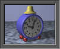

Welcome to WebPlan 1.8
Developed by Gaetan Lord and
Michel Bourget
Based on plan, which is maintained by
Thomas Driemeyer.
Installation
- Copy all files in the web directory of the plan
distribution to the cgi-bin directory of your HTTP server.
This directory is often located in /var/httpd.
- You need a netplan server version 1.8 or later running on
the same host that the web server running the WebPlan CGI scripts
runs on. Its data directory must be named
/usr/local/lib/netplan.dir, which must be writable for the
CGI scripts.
- There must be a plan executable version 1.8 or later in the
directory /usr/local/bin on the host that the web server is
running on.
There is no way to run the web interface without the help of an HTTP
server. You need root access to install it.
Notes
List of Users on this WebServer
- For very obvious reasons, I don't explain how to delete an entry.
[Note by thomas: doesn't work in version 1.8 anyway.]
- Private Entries are those starting with a . (dot) in the text
Description. Please do not confuse with regular plan Private Entries.
- Appointment:Yes/No button is No if you only want Day Event data.
- Private:Yes/No button is No if you only want non-private data (as
defined above).